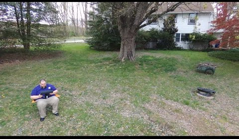

Play enough Overwatch and you need something to change things. This slack bot will randomly
assign roles to a team from 2 to 6 players. The slack bot uses DJ Khaled as its icon and also
includes one of his inspirational quotes along
with role assignments.
Marple Presbyterian Church's VBS 2019 theme was "To Mars and Beyond". So I created the mission
control game. It's done in an 8 bit retro look which really seemed to land even with the kids
too young to know what that is. If you can
solve the security puzzle and complete the launch sequence it trips a relay via webservice which
sets off a smoke machine.
The N Queen is the problem of placing N chess queens on an [NxN] chessboard so that no two queens
attack each other. This is one of those math problems that takes over my mind from time to time.
When I have an idea worth coding for
testing you can find it here.
A while back I did a study in turning portraits into halftone version images. I would then cut
those on a laser cutter and even attempted a few etchings in tile and other materials. I wrote
this program to translate images to SVG cut
files in halftone.
It's really easy to make SVG stencils in Adobe Ilustrator. However one concept that is difficult
to do in Adobe is to add tabs to hold islands in position. This tool breaks up overly long lines
and anchors islands. Still a work in
progress.
Creation is a compulsion. Sometimes I remember to take pictures
Bravo Stage: Chess
Bravo Theatre Company put on Chess for their 2019 show. The story involves a politically driven,
Cold War era chess tournament between two grandmasters from America and the USSR. I built the
stage and the frames to fly the flags in
the background.
Gallery
D&D Galleon Build
My D&D Group is currently working through the "Storm King's Thunder". The DM wanted a physical
model for the AirShip. I shared my cut files on thingiverse if you're interested in making your
own.
Bravo Theater Company performed "Into the Woods" for its 2018 show. This was one of the largest
sets I have been a part of building to date. The show required a library which became an
enchanted forest. The set had a second story balcony,
a short bridge, and a spiral staircase. The show was amazing and the set looked great.
Gallery
Little Mermaid Boat
One of the local high schools needed a rolling boat for there production of The Little Mermaid.
This project was fun if only for the video of Kristen piloting the boat around the shop.
Gallery
Modular Dungeon Tiles
I was watching too much of the black magic craft channel, which caused me to think I really
needed a set of modular dungeon tiles. I am not currently running a game and probably won't for
a little while. However it turned out to be
a great lesson is painting fake stone. I posted the cut files on thingiverse if you want to cut
your own.
Youth Group is always looking for new games. We saw a metal version of this at our summer retreat
and wanted to bring it home. It was going to be a lot of pvc pipe to cut and then we had the
brilliant idea. Let the kids do it. They
did a great job.
Gallery
Les Miserables: Muskets
Got another prop request from a local high school musical. This time for muskets for Les
Miserables. I was happy with this design and it came in for under $4.00 a musket. Everything
sourced from Home Depot. The stock is cut from 2"x6".
The barrel rest is a 2"x2" with a channel routed down the middle. The barrel is 3/4" schedule 40
electrical conduit. They looked very good stained up.
Gallery
Some Random Stuff
Just some other stuff
Drone Flight

Finally got my drone out of the box and took it for a flight. It was amazing, can't wait to try
this other places.
Gallery
Emergency Stream Project
I never wanted to be a twich streamer, but I also didn't expect the world to lock down for
months. Since people can't go to church, church needs to come to the people. so on short notice
I learned how to stream and began cobbling a
small setup together. Several iterations latter I think I build a great setup that will extend
the reach of the church.
Many years ago now my cousin and I got together to celebrate a shared fandom of starwars buy
building some prop ready light sabers. Slip joint drain pipe from a hardware store, electronics
from radio shack, and a dremel rotary tool
combined for a certain kind of magic.